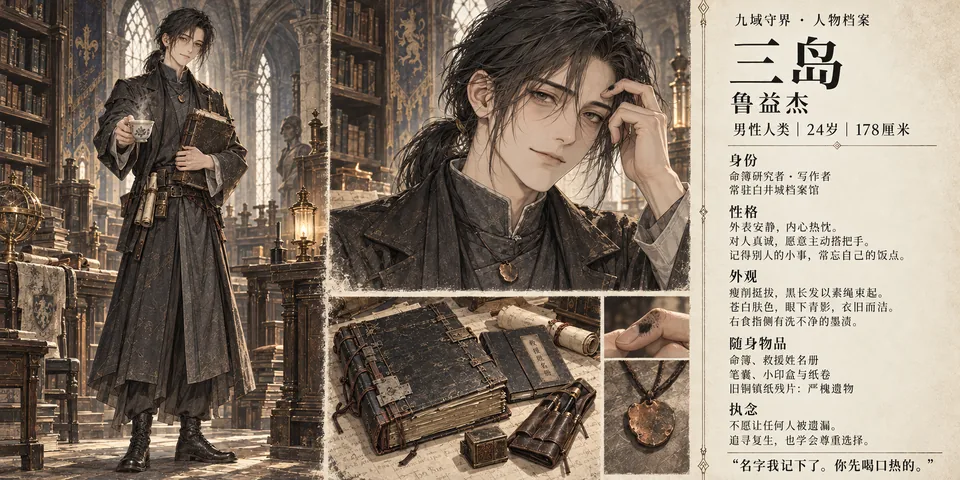
← 返回世界观
01 02 03 04
05 06 07 08 09 10 11 12 13 14
15 16 17 18
19
20 21 22 23
24 25
26
27 28
CHARACTER ARCHIVE / 人物档案
人物设定图集
九域之间的同行者。选择头像，查看人物展示卡与个人资料。
28 / 28 位角色
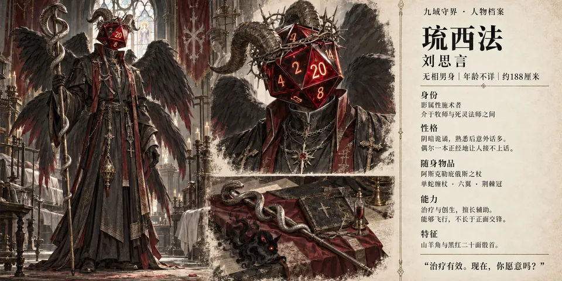
琉西法
查看人物资料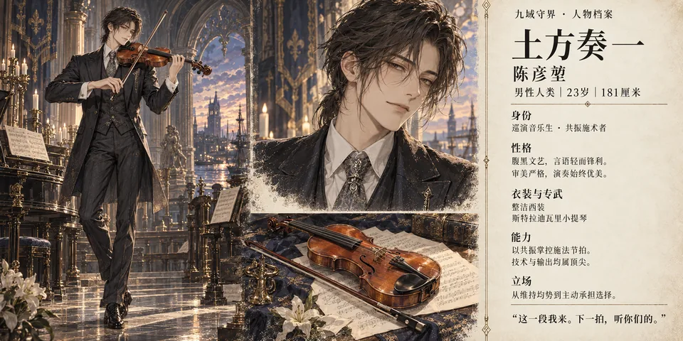
土方奏一
查看人物资料贾小鱼
查看人物资料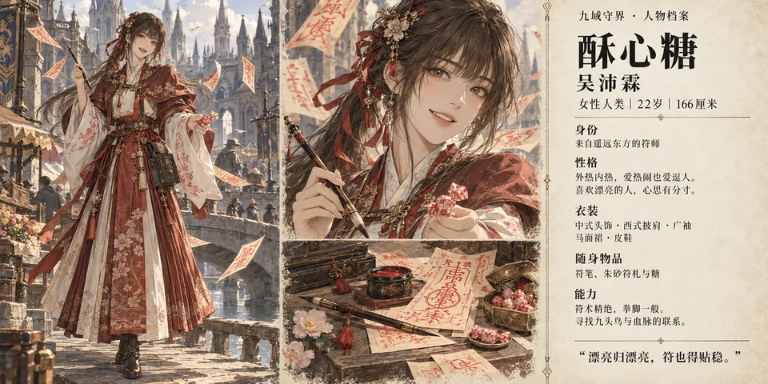
酥心糖
查看人物资料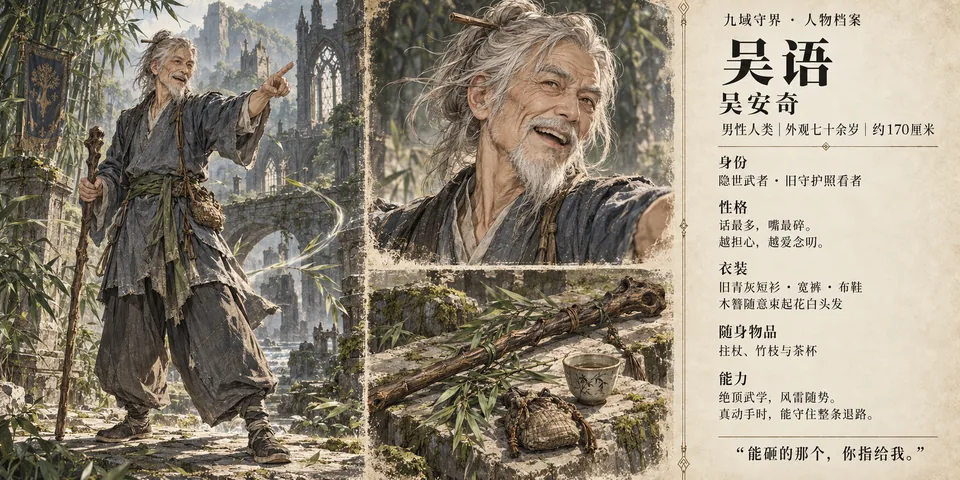
吴语
查看人物资料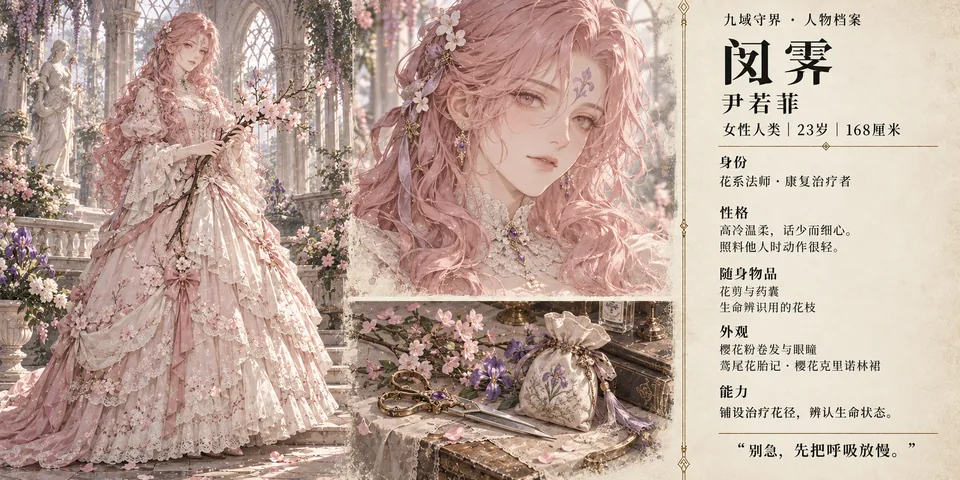
闵霁
查看人物资料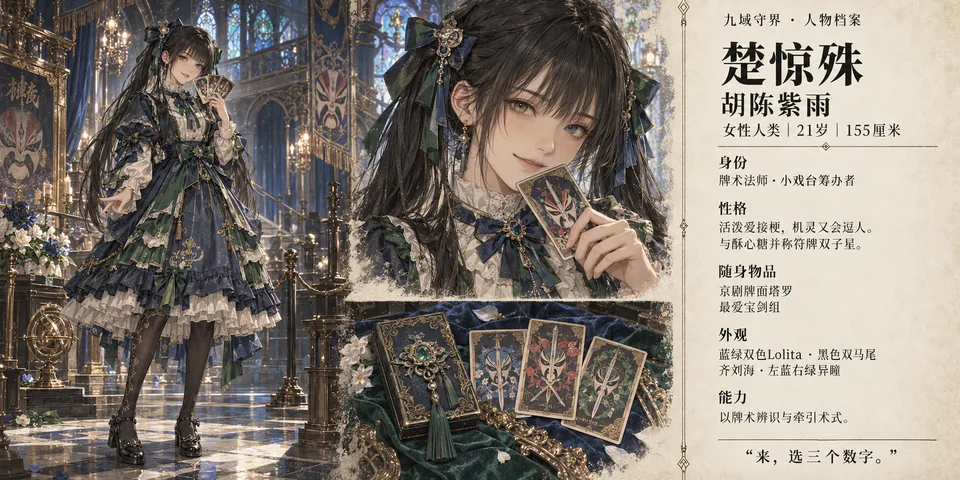
楚惊殊
查看人物资料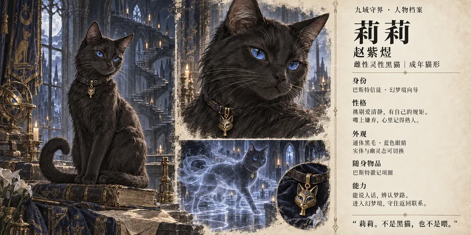
莉莉
查看人物资料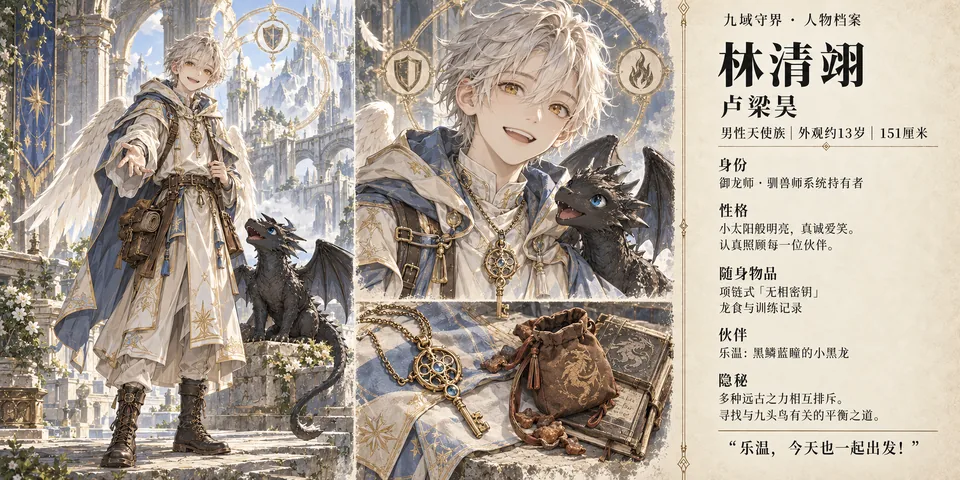
林清翊
查看人物资料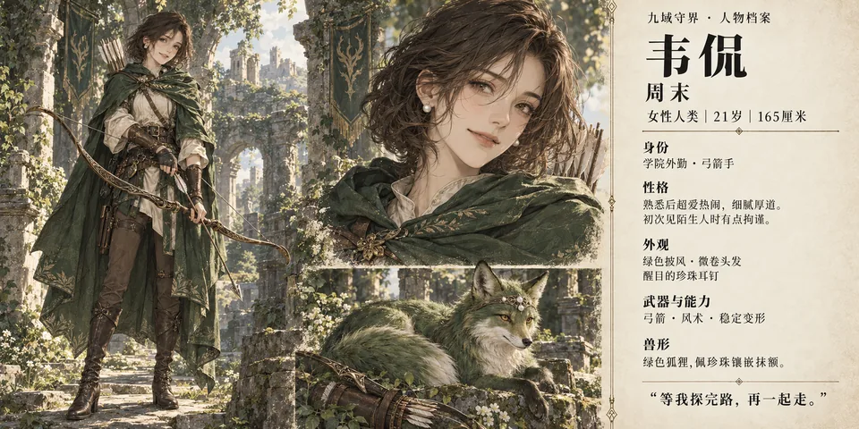
韦侃
查看人物资料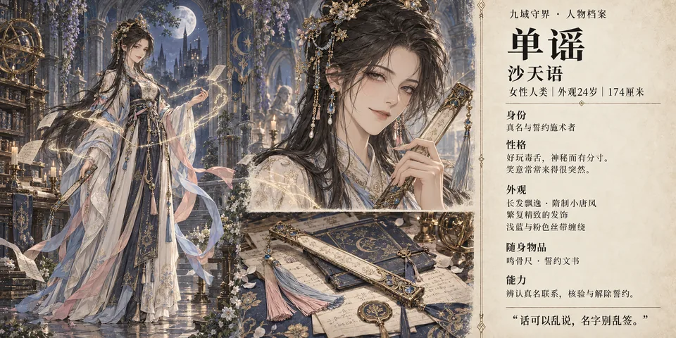
单谣
查看人物资料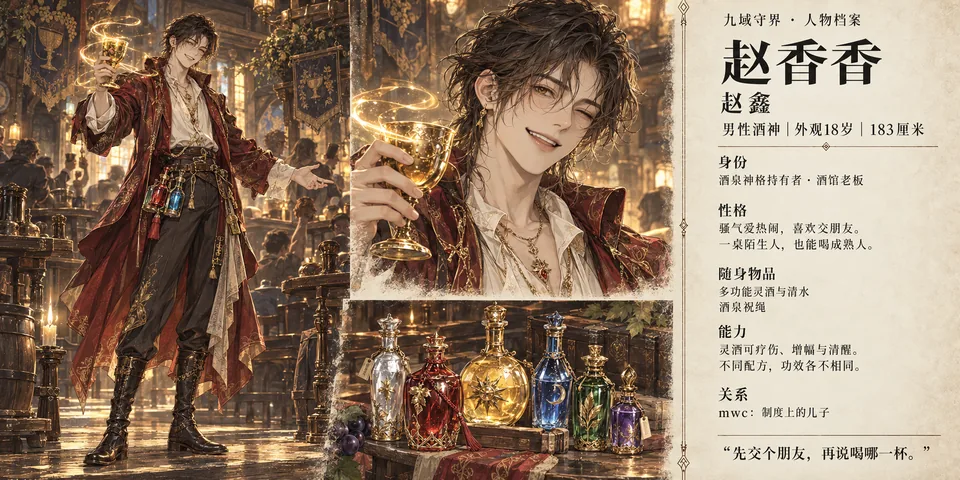
赵香香
查看人物资料彭湃
查看人物资料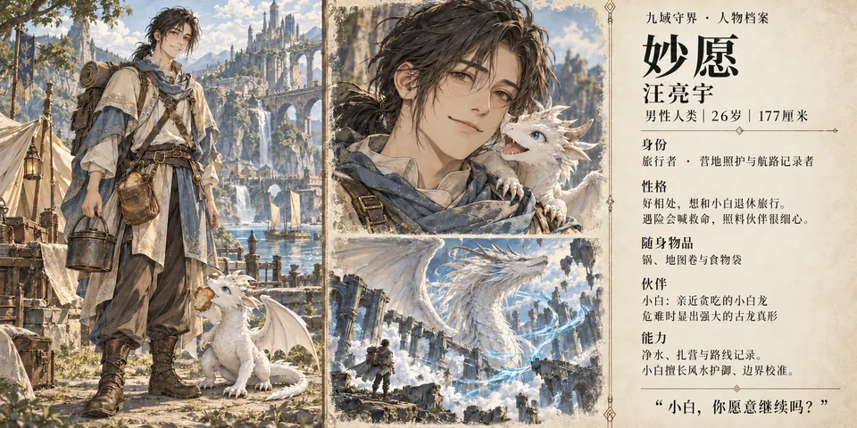
妙愿
查看人物资料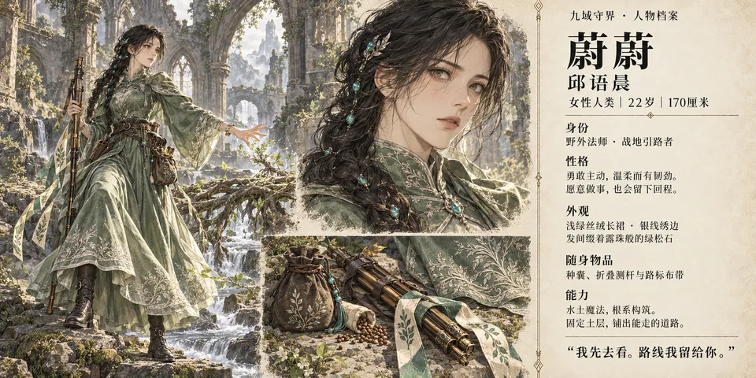
蔚蔚
查看人物资料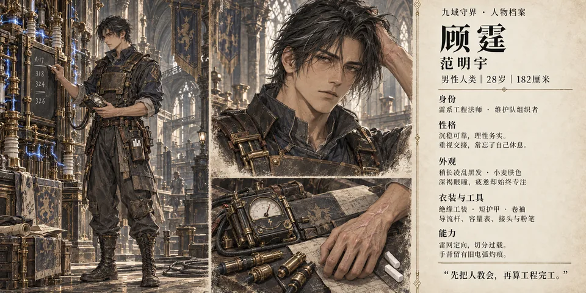
顾霆
查看人物资料甄没用
查看人物资料曲柯
查看人物资料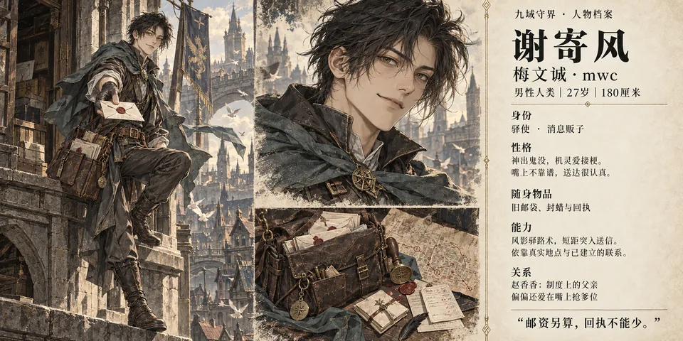
谢寄风
查看人物资料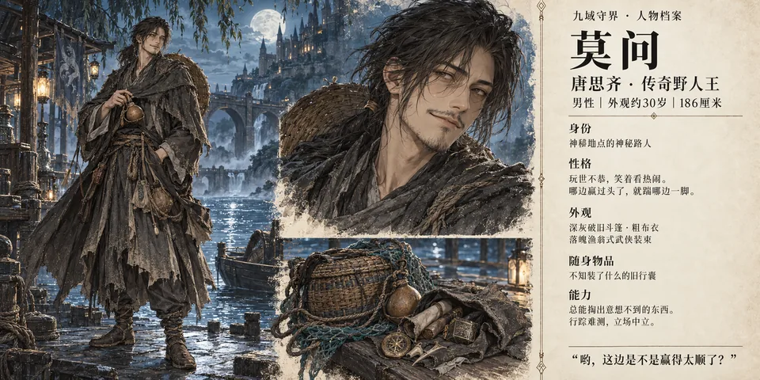
莫问
查看人物资料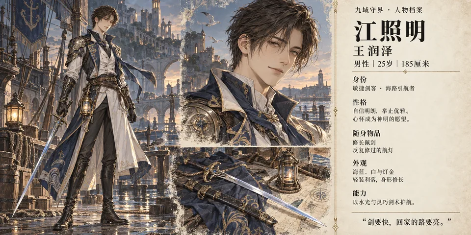
江照明
查看人物资料小语
查看人物资料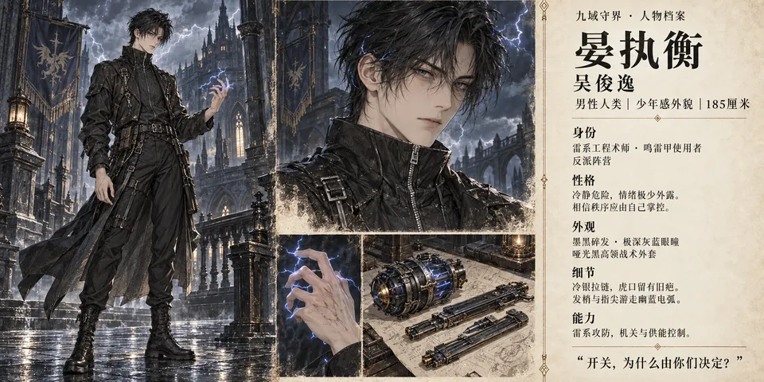
晏执衡
查看人物资料墨默
查看人物资料白阅尘
查看人物资料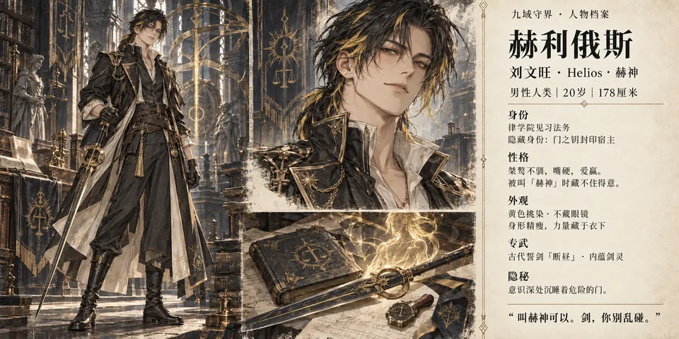
赫利俄斯
查看人物资料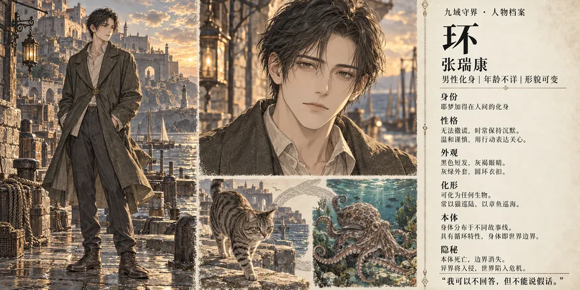
环
查看人物资料没有找到对应角色，换个名字试试。